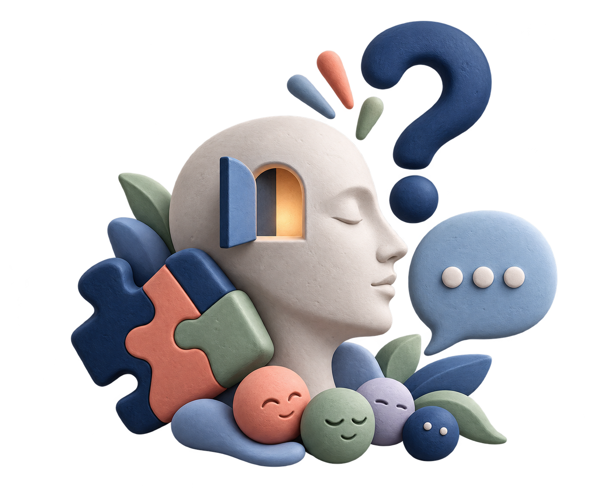

사람의 마음을 단정하지 않고, 근거와 맥락으로 살펴보는 심리학 학습 테스트입니다.

기초부터 최종 사례 분석까지, 단계별로 사고의 깊이를 높여갑니다.
인지·학습·사회·발달·연구방법의 핵심 개념을 20개의 객관식 문제로 확인합니다.
성격유형이나 정신건강 상태를 판정하지 않습니다.
한 가지 행동만으로 타인의 내면을 확정하지 않습니다.
상황, 반복 패턴, 실제 관찰을 함께 살펴봅니다.
다른 필터를 선택해 보세요.